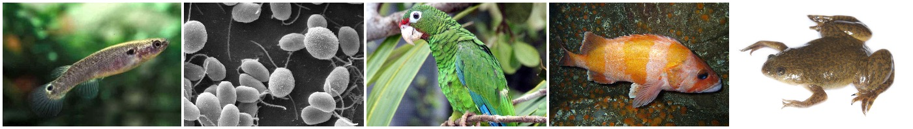

2.2.1. G-OnRamp Features¶
2.2.1.1. Web-based platform¶
G-OnRamp provides an integrated, web-based, graphical interface for performing large scale bioinformatics analyses. G-OnRamp is based on Galaxy platform. Galaxy (http://galaxyproject.org/, https://usegalaxy.org) is an open-source, web-based scientific gateway for accessible, reproducible, and transparent analyses of large biomedical datasets that is used throughout the world. G-OnRamp extends Galaxy with analysis workflows that create a graphical genome browser for annotation, including evidence from sequence homology, gene predictions, and RNA-seq. The end users do not need to install any software and no programming skills are required. The users can access the G-OnRamp workflow and run the analysis through a graphical interface to create genome browsers for new genome assemblies.
2.2.1.2. Designed for any genome¶
G-OnRamp is designed to work with any eukaryotic genomes. The 10 participants from 9 institutions to the beta testers workshop (July 26-28, 2016) worked on five genome assemblies: Kryptolebias marmoratus, Chlamydomonas reinhardtii, Amazona vittata, Sebastes rubrivinctus, Xenopus laevis. The assembly hubs of these species can be viewed at UCSC Genome Browser.
2.2.1.3. Reproducible workflow¶
G-OnRamp record all the steps in the analysis workflow (e.g., tool parameters, data conversions) so that you can apply the same workflow to other eukaryotic genomes. All the datasets, including uploaded datasets and the output datasets from each steps that generate a dataset, are stored by Galaxy in Histories. The tools and their settings used in each step are also stored in the Histories. For more information, see `Galaxy Histories <>`_. An analysis workflow can be generated from the analysis already completed in a history. It contains a series of tools and settings used in each step, which makes it simple to applying the same methods to the other datasets. For more information, see `Extracting Galaxy Workflow <>`_ from a History.
2.2.1.5. Customizable¶
You can incorporate additional Galaxy tools and modify the G-OnRamp workflow (e.g., tool parameters) according to your needs. The easiest way to get new tools is to install them from the Tool Shed. The Add Tool From Tool Shed Tutorial describes step by step instructions about how to install a tool from the Tool Shed. In some cases, the workflow needs to be adjusted (e.g. change the parameters settings of some tools) for running the analysis on the new datasets. Basic Workflow Editing provides a tutorial of how to perform basic workflow editing. The Customize the Genome Browsers produced by G-OnRamp is a walkthrough of how to edit a G-OnRamp workflow.
2.2.1.6. Multiple deployment options¶
G-OnRamp analysis can be done on the cloud (e.g., Amazon EC2) or on the a local virtual machine (e.g., VirtualBox) instance.